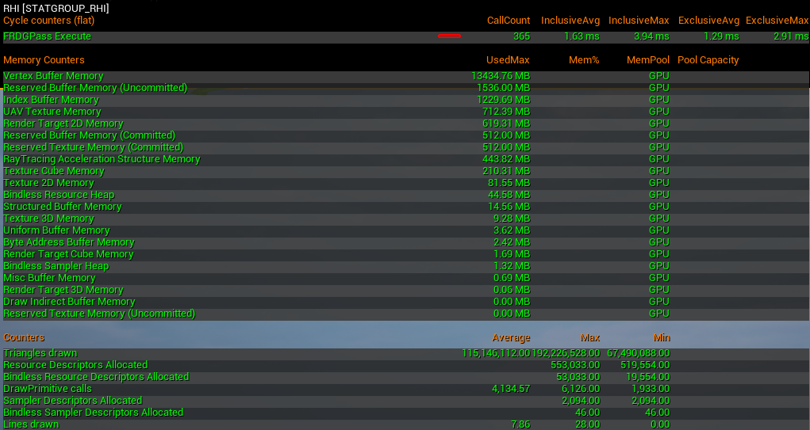
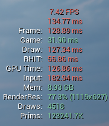
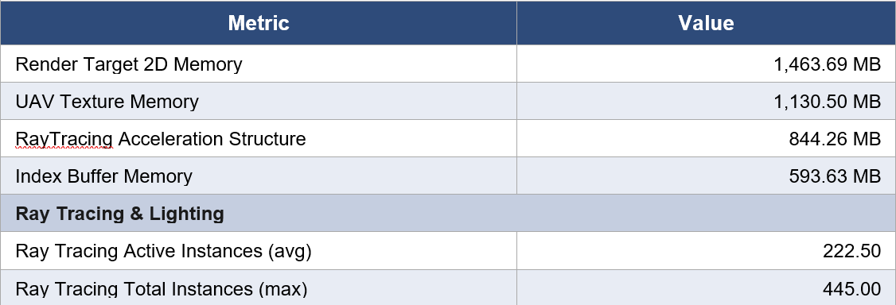
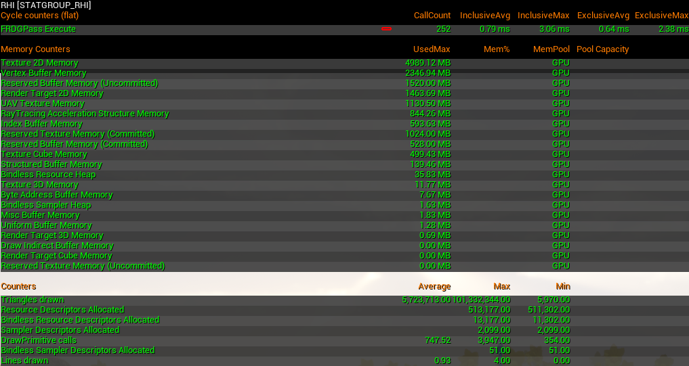
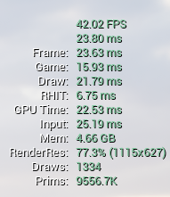
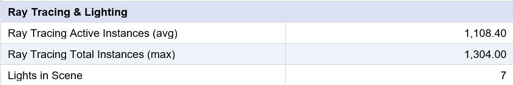
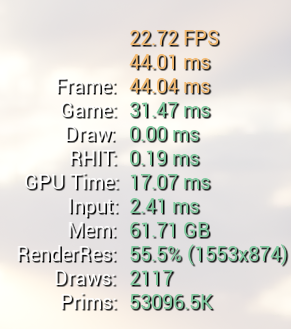
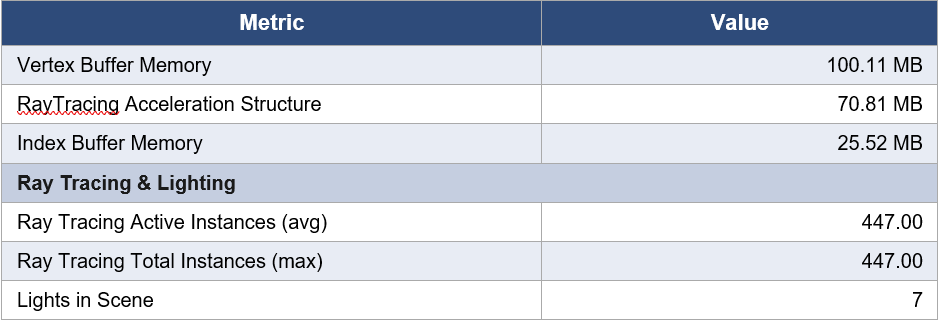
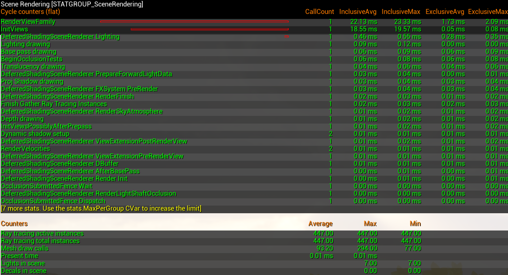
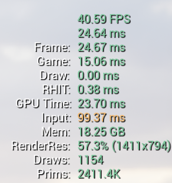

第 8 周
第 8 周计划：
-
比较大量 VAT 水仙花与 USD 水仙花（效能、保真度）
VAT 与 USD 比较
我在两台不同的电脑上跑了同样的样本（462 朵水仙花），以下是两台电脑的规格。

4090 电脑：
首先，我把 462 朵有动画的水仙花汇入 Unreal 来测试 USD 流程。每朵水仙花大约有 116,450 个点。结果动画会掉格，载入几何快取也要很久。以下是我从 Unreal 收集的数据。
即时算图效能指标 USD（RTX 4090）


Memory － 系统记忆体用量
Scene Rendering － 场景算图拆解


RHI － GPU 记忆体用量
Unit － 影格率与执行绪时间
接著我把 VAT 水仙花汇入 Unreal，再用 Unreal 的 PCG 做 instancing，大约 462 朵。





Memory － 系统记忆体用量
Scene Rendering － 场景算图拆解


RHI － GPU 记忆体用量
Unit － 影格率与执行绪时间
根据从 Unreal 得到的数据，可以明显感觉到 VAT 在 FPS 上的效能更好。
RTX PRO 6000 Blackwell：
我也在 RTX PRO 6000 Blackwell 工作站上把有动画的水仙花汇入 Unreal Engine。不过如前所述，水仙花仍然没有材质。此外，Level Sequence 播放时会掉格，无法流畅播完整段动画。尽管有这些问题，FPS 表现仍明显优于 RTX 4090。
即时算图效能指标 VAT（RTX PRO 6000 Blackwell）




Memory － 系统记忆体用量
Scene Rendering － 场景算图拆解


RHI － GPU 记忆体用量
Unit － 影格率与执行绪时间
接著我也在另一台电脑上把 VAT 水仙花汇入 Unreal，再用 Unreal 的 PCG 做 instancing，大约 462 朵。




Memory － 系统记忆体用量
Scene Rendering － 场景算图拆解


RHI － GPU 记忆体用量
Unit － 影格率与执行绪时间
结论：
在即时效能上 VAT 完胜 USD：同样的硬体上是 40 FPS 对 7 FPS，GPU 记忆体用量还少了 130 倍。要在 Unreal 中算出数百株有动画的植物，VAT 每次都赢。